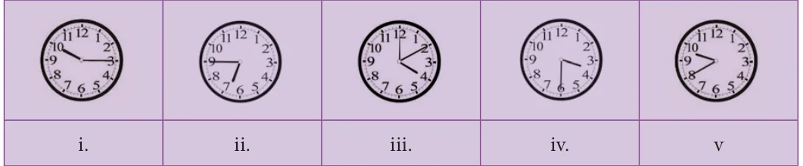
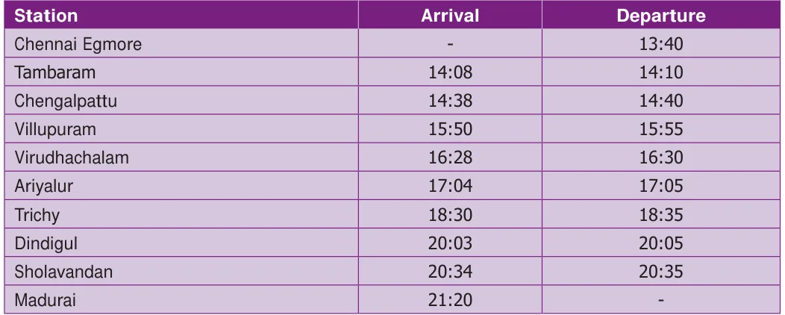
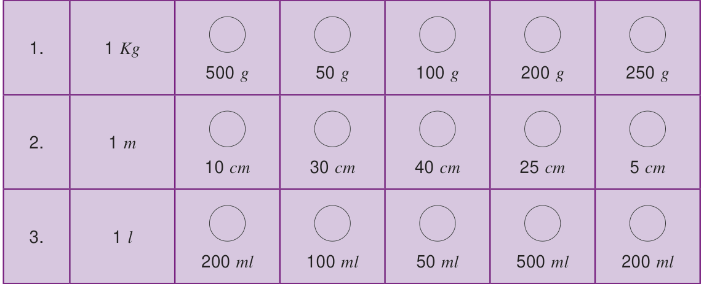
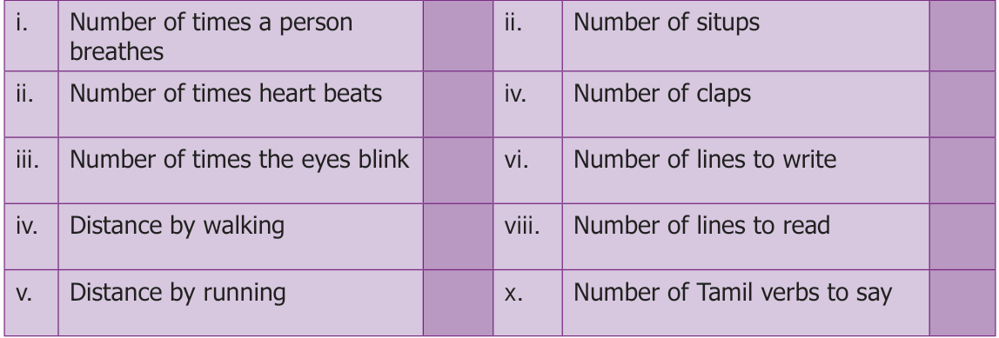

- Say the time in two ways:

- Match the following:
- 9.55 a. 20 minutes past 2
- 11.50 b. quarter past 4
- 4.15 c. quarter to 8
- 7.45 d. 5 minutes to 10
- 2.20 e. 10 minutes to 12
- Convert the following:
- 20 minutes into seconds
- 5 hours 35 minutes 40 seconds into seconds
- 3 hours into minutes
- 580 minutes into hours
- 25200 seconds into hours
- The duration of electricity consumed by the farmer for his pumpset on Monday and Tuesday was 7 hours 20 minutes 35 seconds and 3 hours 44 minutes 50 seconds respectively. Find the total duration of consumption of electricity.
- Subtract 10 hours 20 minutes 35 seconds from 12 hours 18 minutes 40 seconds
- Change the following into 12 hour format
- 02:00 hours (ii) 08:45 hours
- 21:10 hours (iv) 11:20 hours (v) 00:00 hours
- Change the following into 24 hour format
- 3.15 a.m (iii) 12.35 p.m
- 12.00 noon (v) 12.00 midnight
- Calculate the duration of time
- from 5.30 a.m to 12.40 p.m
- from 1.30 p.m to 10.25 p.m
- from 20:00 hours to 4:00 hours
- from 17:00 hours to 5:15 hours
- The departure and arrival timing of the Vaigai Superfast Express (No. 12635) from Chennai
Egmore to Madurai Junction are given. Read the details and answer the following.

- At what time does the Vaigai Express start from Chennai and arrive at Madurai?
- How many halts are there between Chennai and Madurai?
- How long does the train halt at the Villupuram junction?
- At what time does the train come to Sholavandan?
- Find the journey time from Chennai Egmore to Madurai?
- Manickam joined a chess class on 20.02.2017 and due to exam, he left practice after 20 days. Again he continued practice from 10.07.2017 to 31.03.2018. Calculate how many days did he practice?
- A clock gains 3 minutes every hour. If the clock is set correctly at 5 a.m, find the time shown by the clock at 7 p.m?
- Find the number of days between the Republic day and Kalvi Valarchi Day in 2020.
- If 11th of January 2018 is Thursday , what is the day on 20th July of the same year?
- (i) Convert 480 days into years.
- Convert 38 months into years.
- Calculate your age as on 01.06.2018 Objective Type Questions
- 2 days = hours.
- 38 b) 48 c) 28 d) 40
- 3 weeks = days
- 21 b) 7 c) 14 d) 28
- Number of ordinary years between two consecutive leap years is
- 4 years b) 2 years
- 1 year d) 3 years
- What time will it be 5 hours after 22:35 hours ?
- 2:30 hours b) 3:35 hours
- 4:35 hours d) 5:35 hours
- 2 years is equal to months.
- 25 b) 30 c) 24 d) 5
Exercise 2.3
- Two pipes whose lengths are 7 m 25 cm and 8 m 13 cm joined by welding and then a small piece 60 cm is cut from the whole. What is the remaining length of the pipe?
- The saplings are planted at a distance of 2 m 50 cm in the road of length 5 km by saravanan. If he has 2560 saplings, how many saplings will be planted by him? how many saplings are left?
- Put mark in the circles which adds upto the given measure.

- Make a calendar for the month of February 2020. (Hint: January 1st 2020 is Wednesday)
- Observe and Collect the data for a minute:
